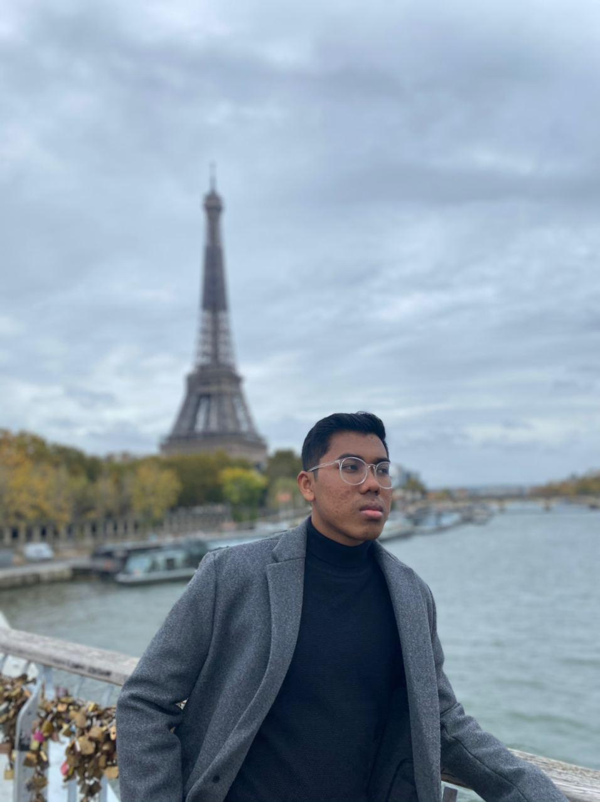

BONJOUR, THIS IS ALIFF IMRAN!

The founder of my new start-up website which is BASIKAL. First year degree of International Business in IESEG Business School , Lille, France. Received and well-succeed a preparatory program in Political Science and Business Management foundation in University Kuala Lumpur, Malaysia France Institute (MFI) in Malaysia. Have ability to speak more than 3 languages and a passion in Human Resource Management.
DISCOVER MY NEW START-UP WEBSITE
BUSINESS MANAGEMENT
Fond of business management course, having ambition to specialize in Human Resource departement. Well-developped skill in statistics and calculus. Well-succeed in Accounting and Applied Economics.
TECHNOLOGY AND SOFTWARE DEVELOPMENT
I am passionate about technology and software industry. Willing to learn more and develop my own start-up website succesfully
TRAVEL AND SPORTS
I am active in sports such as volleyball and love doing adventrous and extreme activities such as flying fox, rock climbing and sky-diving. Not forget to mention, I am excited with the idea of travelling around the world to discover new places and countries while enjoying the nature.